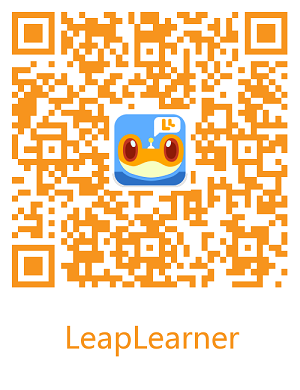

Scratch（L0）课程介绍¶
课程定位¶
课程介绍¶
本课程分为4个单元，每单元6个课时，共24课时。
在完成本课程的学习后，学生应掌握下列知识：
（1） 理解编程的概念，了解scratch图形化软件的使用，和积木的基本操作与用法
（2） 掌握基本的积木应用，学习简单的思维逻辑与相对应的积木。
（3） 掌握与编程有关的数学和计算机知识，学习较难的思维逻辑与相对应的积木
理解对象与对象之间的关系，让对象之间传可以递消息或变量内容。
课程大纲¶
Unit 1：初识编程¶
课程内容¶
学习scratch中最基本的运动类型积木与简单的功能型积木，通过让角色说、移动、和背景切换，实现简单的动画效果。并且熟悉scratch软件应用。
单元目标¶
知识与技能
了解软件的基本操作，理解编程的概念，初步建立简单的编程思维，初步了解角色、背景的运动与编程之间的关系，探索移动与方向的关系，初步了解坐标与角色的位置关系
过程与方法
通过积木，初步形成图形化的逻辑思维。能够在抽象思维与具体图形之间建立联系，尝试理解事物本身的特性，能够通过简单的积木，自己让角色在舞台中运动，实现简单的动画效果。
情感态度与价值观
消除对编程的陌生感和恐惧感，愿意参与编程活动，建立敢于尝试与探索的行为习惯。
课时列表¶
| 课次 | 课程 | 课程内容 |
|---|---|---|
| 1 | 初识编程 | 认识Scratch和界面操作 |
| 2 | 森林狂欢节 | 学习切换角色的各种造型 |
| 3 | 舞台表演 | 学习利用说话和录音积木让角色讲故事 |
| 4 | 小猫拍球 | 使用移动积木让角色来回运动 |
| 5 | 淘气男孩 | 学习使用碰到边缘反弹积木 |
| 6 | 猫抓老鼠 | 学习面向积木让角色跟随鼠标移动 |
第二部分：¶
| 课次 | 课程 | 课程内容 |
|---|---|---|
| 7 | 百变小猫 | 改变角色的颜色特效 |
| 8 | 蒙迪做体操 | 学习使用改变角度控制角色运动方向 |
| 9 | 风车转转 | 学习使用图章的效果绘图 |
| 10 | 一起看日出 | 使用显示和隐藏积木 |
| 11 | 参加晚会 | 使用询问等待和回答积木认识新朋友 |
| 12 | 鲨鱼来了 | 学习简单的或运算控制多个角色 |
第三部分：¶
| 课次 | 课程 | 课程内容 |
|---|---|---|
| 13 | 儿歌演奏 | 用音符积木设计儿歌 |
| 14 | 动物走迷宫 | 学习使用键盘控制角色移动 |
| 15 | 快乐的小猫 | 学习满足某条件就执行下一步 |
| 16 | 蜘蛛画图 | 使用落笔和抬笔的功能画图，和角的学习 |
| 17 | 旋转大风车 | 使用图层的功能，和数学中角度的学习 |
| 18 | 星空画板 | 改变画笔颜色，和随机积木的应用 |
第四部分：¶
| 课次 | 课程 | 课程内容 |
|---|---|---|
| 19 | 按钮风扇 | 使用广播，实现角色之间的联系 |
| 20 | 猫咪爱吃鱼 | 深入学习多种条件判断积木的使用 |
| 21 | 动物循迹 | 了解循迹原理，通过判断积木让动物按轨迹行走 |
| 22 | 一起打猴子 | 建立变量，实现游戏分数，时间等功能。 |
| 23 | 玩骰子比大小 | 综合运用学习的积木并巩固变量积木的使用 |
| 24 | 节日贺卡 | 综合运用学习的积木为家人创作节日贺卡 |
第五部分：海底乐园¶
| 课次 | 课程 | 课程内容 |
|---|---|---|
| 25 | 海底乐园(1) | 项目实践课：通过变量可以出传递参数的功能，实现大鱼吃小鱼进行成长 |
| 26 | 海底乐园(2) | 项目实践课：通过对判断语句的深入了解，实现鲨鱼在成长中是否可以吃其他鱼类 |
| 27 | 海底乐园(3) | 项目实践课：学习简单的相对坐标概念，实现螃蟹对鲨鱼与自己距离的侦测 |
| 28 | 接鸡蛋(1) | 项目实践课：为游戏添加简单的故事情节。 |
| 29 | 接鸡蛋(2) | 项目实践课：实现鸡蛋随机从舞台的上方掉落 |
| 30 | 接鸡蛋(3) | 项目实践课：添加更多角色，丰富游戏内容 |
第六部分：画图工具¶
| 课次 | 课程 | 课程内容 |
|---|---|---|
| 31 | 画图工具 | 综合使用图章、落笔、抬笔制作画板 |
| 32 | 幸运大转盘 | 巩固按键事件及图层的使用 |
| 33 | 炸裂星空 | 巩固克隆、移动积木的使用 |
| 34 | 弹力球 | 学习镜面反射原理，改变角色运动方向 |
| 35 | 太空飞船 | 综合使用条件判断，随机数和变量 |
| 36 | 避障小车 | 使用响度积木控制小车 |
第七部分：小小数学家¶
| 课次 | 课程 | 课程内容 |
|---|---|---|
| 37 | 蚂蚁循迹 | 巩固多重条件判断的使用 |
| 38 | 知识问答 | 巩固询问回答积木，实现人机交互 |
| 39 | 绘本故事 | 使用切换背景制作有趣的绘本 |
| 40 | 成语解析 | 用所学积木，讲解一个成语 |
| 41 | 小小数学家（一） | 设计简易计算器，解决数学题目 |
| 42 | 小小数学家（二） | 制作一个数学题卡，判定得分 |
| 43 | 小小数学家（三） | 使用变量和条件判断积木解决鸡兔同笼问题 |
第八部分：射击游戏¶
| 课次 | 课程 | 课程内容 |
|---|---|---|
| 44 | 射击游戏（一） | 综合使用所学积木设计复杂项目 |
| 45 | 射击游戏（二） | 综合使用所学积木设计复杂项目 |
| 46 | 射击游戏（三） | 综合使用所学积木设计复杂项目 |
| 47 | 大鱼吃小鱼 | 综合使用所学积木设计复杂项目 |
| 48 | 水果忍者 | 综合使用所学积木设计复杂项目 |
